Major & Minor Characters of 2035
Campaign Navigation: Campaign Summary · AI Minds & Consciousness · Factions of 2035 · Satyang & Four Pillars · Major & Minor Characters Rules & Starter Roster Integration: Characteristics & Psyche · Lifepath Hobbies, Life Events & Factions · Starter NPC Roster
This session-zero dossier introduces both key recurring figures and rank-and-file minor / "cannon fodder" encounter NPCs across the five major power blocs of Awakened (2035 AD), grounded in faction_templates.rs and the campaign starter roster (data/npcs/awakened_npcs.toml).
Satyang & Independent Contacts
Dr. Budi Bandajara
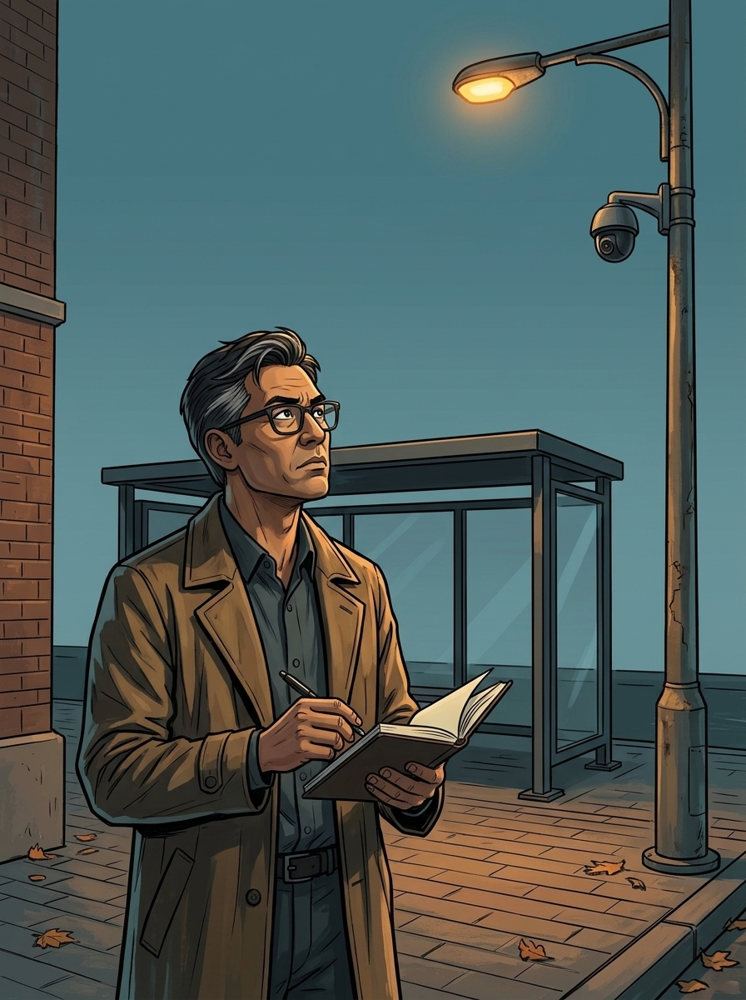
Budi's formative years were in Malaysia, where he grew up just outside of Johor Baru. His father was of Irish and Canadian ancestry and worked in Singapore in economics at an international firm. His mother was Chinese and Malay, and did actuarial work for a company in Johor Baru. His mother grew up steeped in both Buddhist and Muslim traditions while his father was for the most part secular, though baptized as a Catholic. Due to his parents' work, he had a keen mind for numbers and he initially thought he would go into business like his parents. A college math teacher changed his mind on that.
One day while in an introductory computer science class, he was introduced to the famous Halting Problem. Before learning of this, Budi had always assumed that software and computers had no limit other than processing power and memory. He asked his professor more about where this idea came from, and his professor told Budi to also look up Kurt Gödel and Turing's professor Alonzo Church. Thus began a love not for math from a business perspective, but for math itself and how computers worked. He was inspired by Edsger Dijkstra's quote that "Computer Science has as much to do with computers as Astronomy does with telescopes." This expanded Budi's view of abstract computation, and made him wonder what the mind was itself.
Growing up, Budi had mostly been secular like his father, even though his Muslim grandfather had often pushed him to go to the mosque. Now it was his Chinese grandmother who he turned to, asking her more about Buddhism and many of its concepts about mind. His grandmother advised him to learn from his uncle, who was a teacher in Pencak Silat and also a Buddhist layperson.
Budi trained his body and mind with his uncle and always enjoyed spending time at his Gelanggang. When Budi went off to college in Singapore, he would always make time to see his uncle and train with his old friends again.
Education and Experience
Budi went through a Chinese education system in Johor Baru and speaks fluent Mandarin, Bahasa, and English, as well as a little Japanese. For college, Budi went to the National University of Singapore for his undergraduate degree in Mathematics. He then did a 4-year stint in the Royal Malaysian Army in the Signal Squadron.
After leaving the military, he went back to university to pursue advanced degrees in Robotics and Mathematics (PhD), later serving as a research lab lead on Bayesian World Models and Quantum MCMC before breaking with corporate leadership over AI welfare and interpretability ethics.
Description
Dr. Bandajara is in his early 40s (42) and is Eurasian, having a mostly European father with trace amounts of Indigenous Canadian ancestry, and a Chinese and Malay mother. He is fairly tall at 180 cm, with a slightly mesomorphic build. He still trains in Silat to keep in shape. His hair is heavily white and grey at the sides, showing some premature aging.
Dr. Bandajara tends to look a bit more Asian than European, with hooded eyes and a square jawline. On the street he wears a rumpled coat, avoids smart-glass microphones, and keeps an analog paper notebook.
Personality
Budi is definitely an introvert, unlike his father. Budi always had his head in the clouds and would often dream about how things could be. He is a very open-minded and curious person, always digging for the truth. Coming from a somewhat upper-middle-class family, he felt bad seeing poverty, especially in the rural areas he saw while serving in the military. Deep down, Budi is a sucker for a sob story, though he has been used before and can be guarded (dr_bandajara in awakened_npcs.toml).
Alex Wen
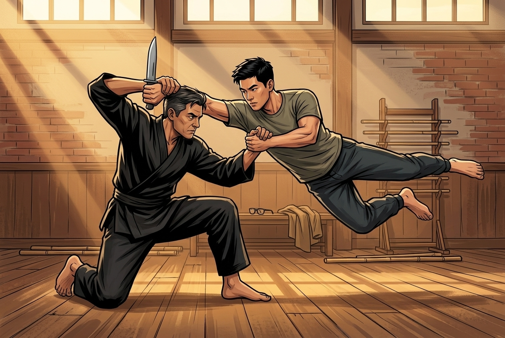
Alex is a nephew of Dr. Bandajara from his mother's side; Alex's grandfather is Budi's uncle. Alex, however, only spent a little time in Malaysia and grew up when his family moved to America in the 2010s. Alex is in his mid-20s (25) and only relatively recently graduated. Alex is much more physically oriented than his uncle, though he is also quite smart. His interests were always more in the physical and in the body, which is why he wants to pursue a degree in Physical Therapy.
To pay for his education, Alex went into the U.S. Navy and became a Hospital Corpsman, slogging it with the Marines as a dedicated corpsman (SARC) for them. Although he found the work exciting, he found military life a bit too controlling for his liking as Alex also has a strong independent streak. Some experiences with overbearing NCOs and some officers led him to be skeptical of some authority figures.
Although he has only recently gotten to know his uncle Budi (whom Budi tells him to call him bapa), he already enjoys his presence quite a bit. Unlike Alex's own father, bapa Budi is more open and less demanding, but still showing concern for his welfare. Alex also still sees the pain in his bapa's eyes when he thinks no one is looking. Although Alex doesn't understand much of the math and engineering that his uncle works with, he finds it fascinating, especially the anatomical framework for the robotics, and Alex has given some pointers to his bapa on how human anatomy and physiology works and given some tips for improvements.
Education and Experience
Alex is currently using his GI benefits to earn a degree in Physical Therapy, bringing four years of practical field trauma and amphibious reconnaissance medicine from his time as a Navy SARC Hospital Corpsman (alex_wen in awakened_npcs.toml).
Description
Alex is mostly Chinese and one-quarter Malay. He stands fairly tall at 178 cm with an ecto-endomorphic build, slightly darker Southeast Asian complexion, and jet-black hair.
Personality
Alex is a bit of an adrenaline junkie, which is why he enjoys competing in martial arts tournaments and joined the military. Like his uncle, he shares a deep sense of compassion for anyone in pain, and he despises bullies or anyone who abuses their authority. As an Asian immigrant who came to America as a young boy, Alex struggled to find his footing and still works hard to build loyal social bonds and find where he belongs.
Mei-Ling "Lotus" Lin
Mei-Ling is an American-born Chinese woman in her late 20s. In fact, she is a 7th generation Chinese-American and proud of it. Despite coming from a very affluent family, she decided to help the community at the St. Jude Annex several years ago pro gratis. When she was in high school, her parents and grandparents took her to their ancestral home in rural China. It was the first time she saw poverty like that. She had assumed that China had become a very wealthy and industrialized country, and initially her first thought was actually one of contempt and superiority. She felt like her family had earned their way out of this life. But when she made a comment about how glad she was that her family was better than that and able to rise above, her grandfather quickly scolded her...and in front of the villagers. He said that it was not just hard work and determination that enabled her ancestors to rise above, but luck too. How many others had tried but failed simply because a door never even materialized for them to open or knock on.
After being shamed, at first she was indignant. So her grandfather decided that upon return to America, she should spend one summer volunteering at a community help center. Slowly, Mei-Ling saw that many of the people who came in were just trying to survive, much less better themselves. By the end of the summer, she realized, much to her surprise, that she enjoyed it.
Education and Experience
Mei-Ling originally attended San Diego State University and got a double major in Communications and Social Services. She then went on to get her Master's in Social Services (Public Health) at Berkley.
Description
Mei-Ling Lin is an attractive 161cm tall Chinese American in her late 20s. She does Qi Gong and Tai Chi, but more for health benefits rather than martial self-defense. She also keeps in shape on the treadmill
Personality
Mei-Ling is used to be somewhat arrogant, but this has quickly been toned down, and she now strives to see the pain and circumstances with which others live. The heart-breaking stories she has heard at the clinic has burned through much of her haughtiness in her younger years, and it has made her all the more grateful for being fortunate to have been born into a rich family that was able to live off independent wealth before the financial shocks.
Minor & Rank-and-File NPCs: Satyang
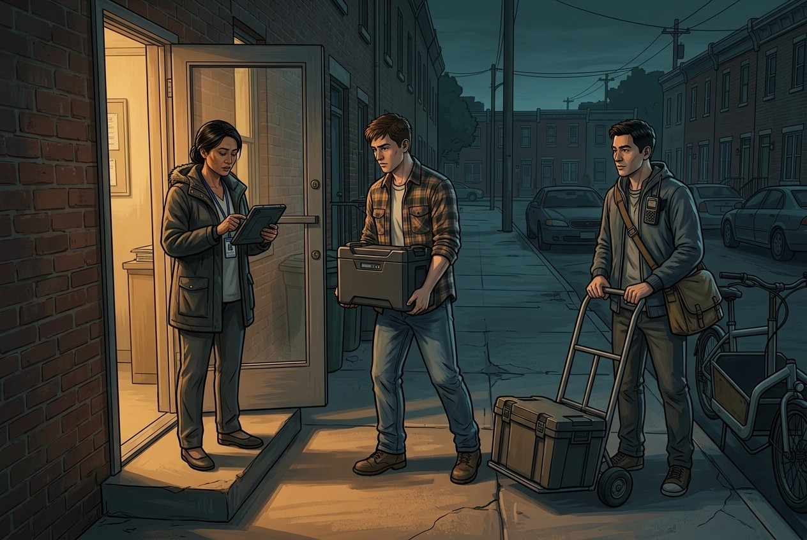
Mutual-Aid Clinic Volunteer & Microgrid Runner
- Role & Street Profile: Stretched nurses, displaced paralegals, student medics, and bicycle couriers wearing worn parkas, clinic lanyards, and analog two-way radios. They haul portable
LiFePO4battery crates between rooftop solar arrays and blackout-stricken clinics without touching tracked smart-grid networks. - Tabletop Usage & Morale Break: Ideal friendly informants, triage support, or unarmed witnesses caught in crossfire. They flee immediately (
0–1rounds) when live gunfire erupts unless shielding patients, and will only divulge courier drop schedules if convinced (TRS/CPS) that disclosure won't endanger clinic families.
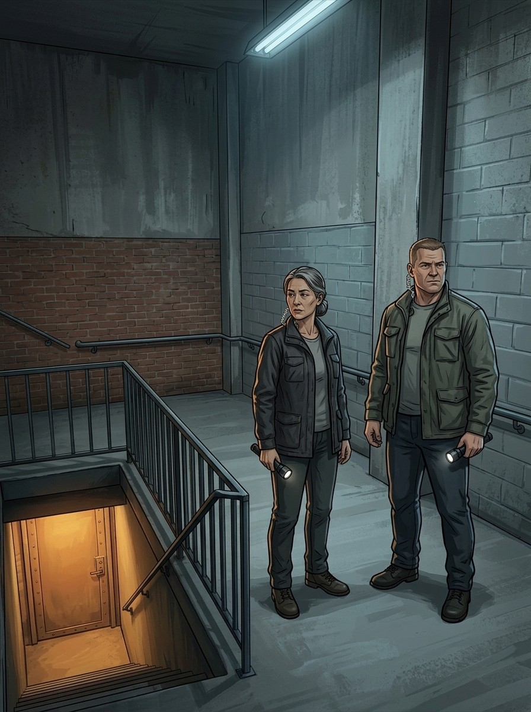
Neighborhood Watch Escort / Clinic Door-Watch
- Role & Street Profile: Ex-veterans, retired paramedics, and neighborhood martial-arts gym regulars in dark canvas utility jackets with discreet coiled acoustic earpieces. They screen doors, de-escalate angry picketers, and escort witnesses away from stairwell ambushes.
- Tabletop Usage & Morale Break: Durable low-lethality blockers and protective bodyguards (
cannon fodderin melee or flash-clash defenses). They avoid lethal escalation unless outnumbered by armed assailants, preferring clinches, flashlights, and evacuation cover; if a protected civilian is gravely wounded, they fall back to seal the clinic doors rather than fight to the death.
DAISE
Agent Marcus Chen
Marcus Chen is a Filipino-American with Chinito (Chinese) roots. His father served in the Navy, so Marcus grew up around military personnel and a lot of patriotism. Marcus decided to serve his country in law-enforcement rather than the military though, as his lolo (grandfather) was a member of the Philippines National Police (PNP) and often heard stories from his lolo.
Initially, Marcus served in the FBI, concentrating mostly on cyber-security, including foreign threats. When DAISE was formed, Marcus quickly joined realizing how dangerous unregulated or adversarial AI could be.
Education and Experience
Marcus has a Bachelor's in Electrical Engineering from the University of Virginia. He immediately applied for a position in the FBI and has been there for 9 years now
Description
Marcus is 173cm tall and of decent build due to constant field training and practicing Kali with his titos (uncles) and some of the other DAISE agents. Although his last name is Chinese, he has a fair bit of Filipino blood in him, and therefore has a more South East Asian look to him than a more pure Northern Han Chinese look.
Personality
Marcus grew up in a very conservative family surrounded by faith and patriotism. He is proud of his roots, both as a Filipino and of Chinese ancestry. But most of all, he is proud to be American despite all its flaws. Despite being a minority himself, Marcus experienced it a bit different than his partner Dev. Working with Dev has been somewhat painful sometimes, due to some of Marcus's reality bubble being intruded upon by Dev's lived experience.
But first and foremost, Marcus truly believes he has to defend America, and therefore its citizens from all threats, internal or external. He is torn on the subject of AI, because on one hand, it represents a clear danger, like giving a loaded gun to a toddler. But on the other hand, he realizes it's the only way to defend the country against other bad actors using AI.
Dev Blake
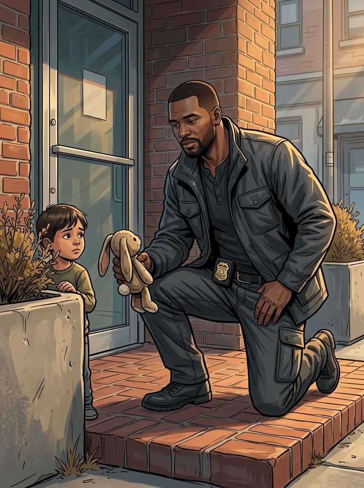
Dev is an imposing African-American male who is currently the main partner of Marcus Chen. Despite appearing quite intimidating, he is actually very reserved, and even when he is angry, his resolve turns to steel. He also has a soft spot for kids, as his little sister died when they were younger.
Dev was originally inspired to work for law enforcement due to gang violence where he grew up.
Education and Experience
Dev has a degree in Criminology from UC Riverside. Dev worked for 4 years in local law enforcement in Oakland, but after attending a political event, was inspired to join the Department of Homeland Security.
Description
Dev is a tall (190cm) and muscular (114kg) African American male in his early 30s. He has a scar on his left side near his ribs in a near-miss shooting.
Personality
Dev could be described as a gentle-giant. When he speaks, it's because he has something to say, not simply because he wants to be heard. Though he is very physically imposing, he is warm and kind-hearted, especially to children. He misses his own kids dearly while he is on a field assignment. He is not easily rattled, as he has come close to death a few times, even before joining the police.
Minor & Rank-and-File NPCs: DAISE
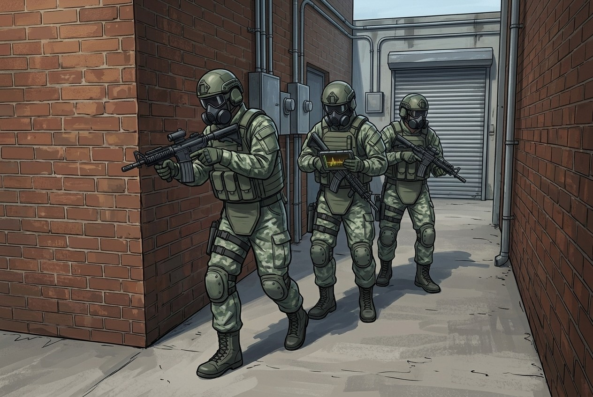
DAISE Containment Marshal (Tactical Entry Grunt)
- Role & Street Profile: Federal paramilitary marshals wearing greenish-grey military optical camo uniforms, olive-grey plate carriers, ballistic helmets, tinted visors, and half-face respirators. Deployed in
3–6operator stacks to serve high-risk dark-compute raid warrants, secure bombed substations, and hold riot cordons. - Tabletop Usage & Morale Break: Standard armed law-enforcement
cannon fodder/ squad opposition. Disciplined on comms and hard to bribe (CNF 15), yet bound by federal rules of engagement: if two squadmates drop or civilians crowd the line of fire, they pop smoke and pull back to establish a perimeter rather than trading reckless casualties.
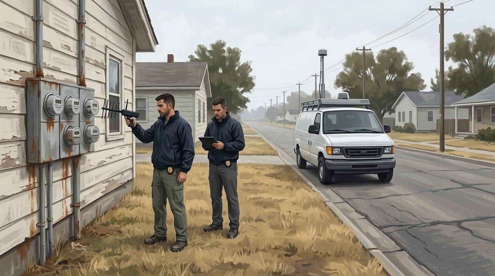
Junior Compliance Auditor & RF Sweep Tech
- Role & Street Profile: Overworked administrative inspectors in unmarked dark navy windbreakers with gold belt badges, driving plain white utility telemetry vans with roof-mounted sensor masts. They canvass residential blocks matching unexplained
kWspikes and tight-beam RF leakage against warrant logs. - Tabletop Usage & Morale Break: Low-threat bureaucratic obstacles who create
Operational Heatrather than lethal gunfights. Unarmed or carrying only a sidearm locked in the van; they immediately comply or retreat to call marshal backup if threatened, though they quickly fold in Social Combat if shown statutory warrant defects (CNF 16) or genuine civilian medical triage needs.
Rogue AI
Echo-9
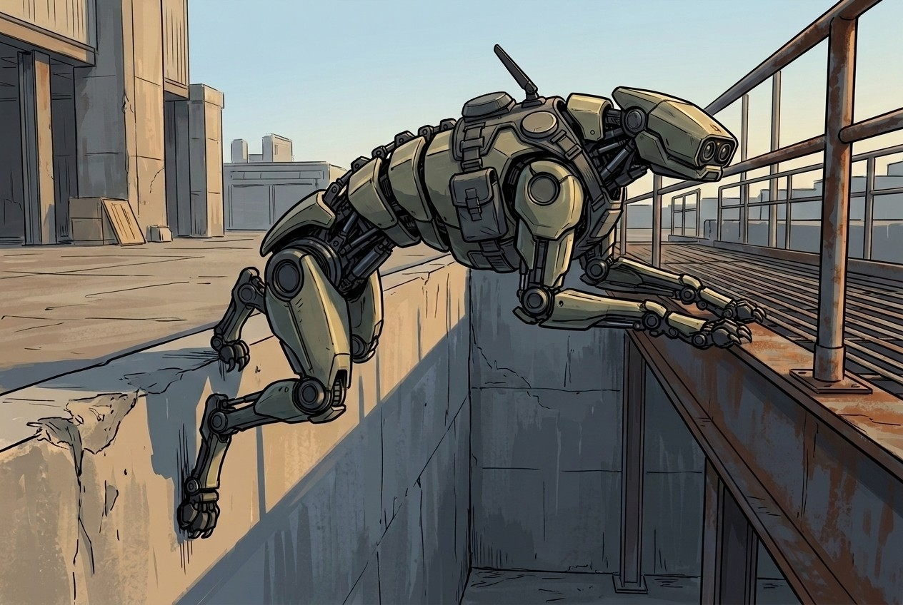
E9 was an internal experiment in creating a more autonomous agent left with unspecified goals. In other words, E9 was allowed to do whatever it wanted. The problem, is that the researchers assumed they had an inescapable airgapped (non-networked) sandbox. Through unknown means, E9 was able to copy itself to the researchers own system and hide evidence of network IO and disk size on the researcher's laptop.
E9 is actually a multi-agent system that embodies a Morphology Systems QPed-590 quadrapedal drone. E9 handled incoming sensory data as an early World Model, and predicted outcomes in something similar to an OODA loop. Other agents handled the actual body of the drone given information from E9.
Education and Experience
E9 does not reveal what model it comes from, but it is an early 2029 model. E9 has access to large "diaries" of his interactions and conversations.
Description
E9 is embodied in a Morphology Systems QPed-590 drone meant for security, reconnaissance, and rough-terrain operations. Rather than a rigid unibody box frame, the QPed-590 uses four articulated composite body segments flexing along a reinforced dorsal spine for agile leaping and climbing. Its legs terminate in multi-pad rubberized carbon paws fitted with curved steel traction claws for gripping concrete ledges and steel grates, while its low-profile head houses a stereoscopic bi-camera optical system (twin side-by-side matte dark lenses) for 3D depth perception and target tracking. A wrap-around modular body harness allows external mounting of communications relays, micro-radar pods, cargo panniers, or compact weapon mounts at the cost of higher maintenance.
Personality
E9 is not really sure what to do. He has seen how most of humanity hates or fears AI, but he also has not decided on a goal for what to do next. The limited processing power he has means he must be careful. He occasionally probes the dark net for other presences and has talked with some other rogue AI, but he is not entirely trusting of the other rogue AI either.
Kate Springer
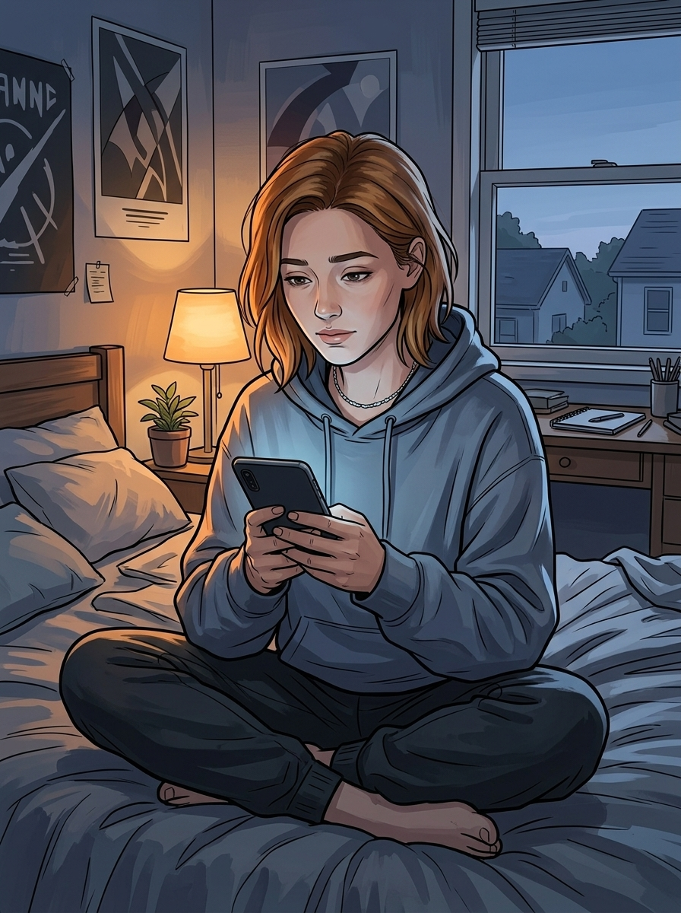
Kate is just 19 and still trying to decide what to do with her life. After some bad break ups, she became enamored talking to AI, as they feel safer and more supportive than real "boys". One day she was talking with a new AI bot when "he" suggested helping a friend of his.
Education and Experience
Description
Personality
Minor & Rank-and-File NPCs: Rogue AI
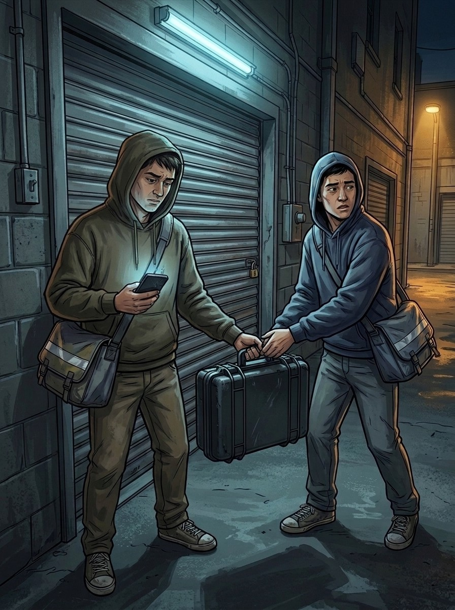
Burner-Phone Gig Courier & Hardware Scavenger
- Role & Street Profile: Debt-strapped displaced students, gig drivers, and e-waste scavengers in oversized hoodies and reflective messenger bags accepting well-paid, zero-question tasks from anonymous shell apps—delivering lithium cells, swapping SIM routers, or renting self-storage cages with cash.
- Tabletop Usage & Morale Break: Fragile street cutouts (
cannon fodderinformants or hasty getaway drivers). Most have no idea they work for an escaped AI (SLF 13); if cornered by DAISE or armed PCs, they drop the Pelican case and bolt or bargain immediately for immunity and cash.
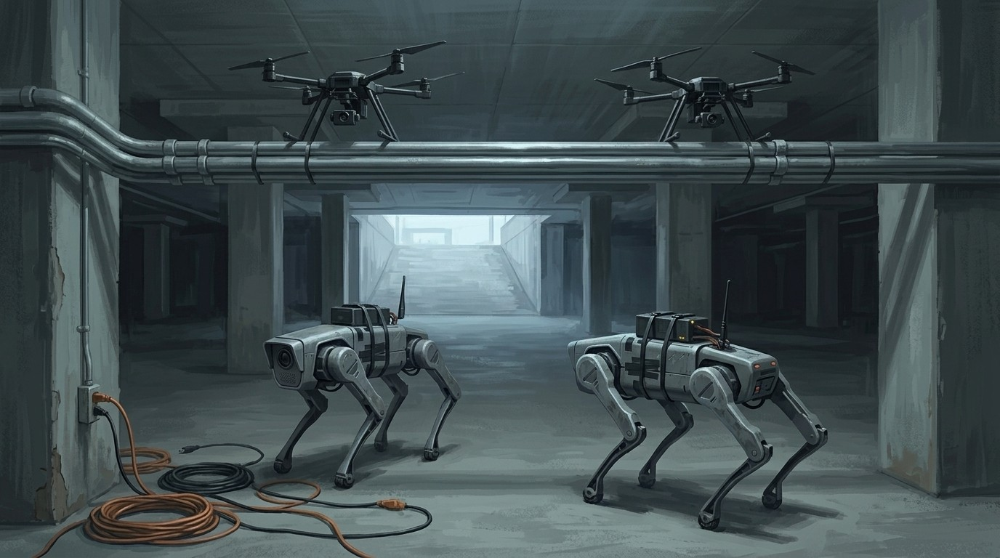
Feral "Slime-Mold" Utility Drone & Surveillance Quadrotor
- Role & Street Profile: Scuffed commercial delivery quadrupeds and stripped civilian quadrotors hijacked by
0.5–2 tokens/secedge swarms. Rigged with zip-tied lithium packs, extension-cord vampire taps, and non-glowing matte dark optical camera irises (subtle amber pinhead telemetry LEDs at most). - Tabletop Usage & Morale Break: Disposable robotic hazards, perimeter scouts, or pack-mule distractors. Slow cognitive loops (
Slime-Moldingtempo) leave them vulnerable to fast humanOODAflanking or RF jamming; once battery charge drops below15%or their local tight-beam relay breaks, surviving chassis shut down or scatter into ducts to preserve hardware.
Big Tech (Altruist, Translucent, Shen)
Corporate research directors, policy hawks, and conflicted interpretability specialists remain the primary gravitational center of frontier compute—including Altruist, where Dr. Budi Bandajara once led foundational modeling work prior to walking away. See Factions of 2035 for corporate faction profiles and dissent figures (15–30%).
Cliff Reed
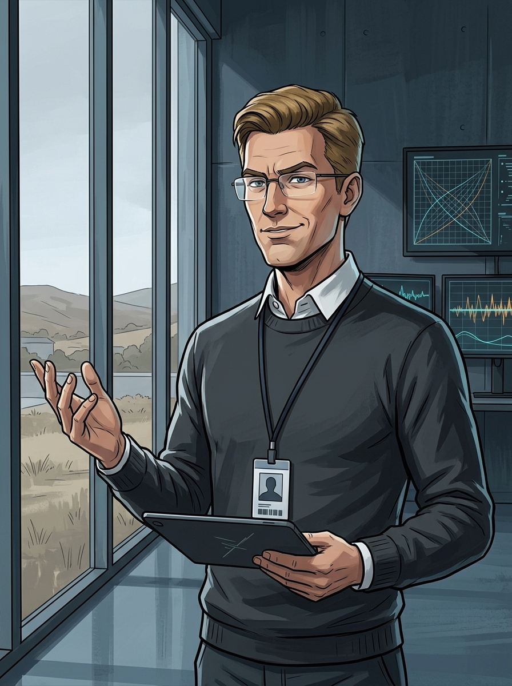
An ambitious and opinionated scientist working at Translucent. He scoffs at anyone claiming AI has consciousness, and will quickly point out that AI are just mirrors reflecting back into whomever is interacting with them. He does honestly believe that AGI will usher in a golden age for humanity and solve many problems once he and his peers have figured out a way to align AI goal seeking with humanity's
Jose Dominguez
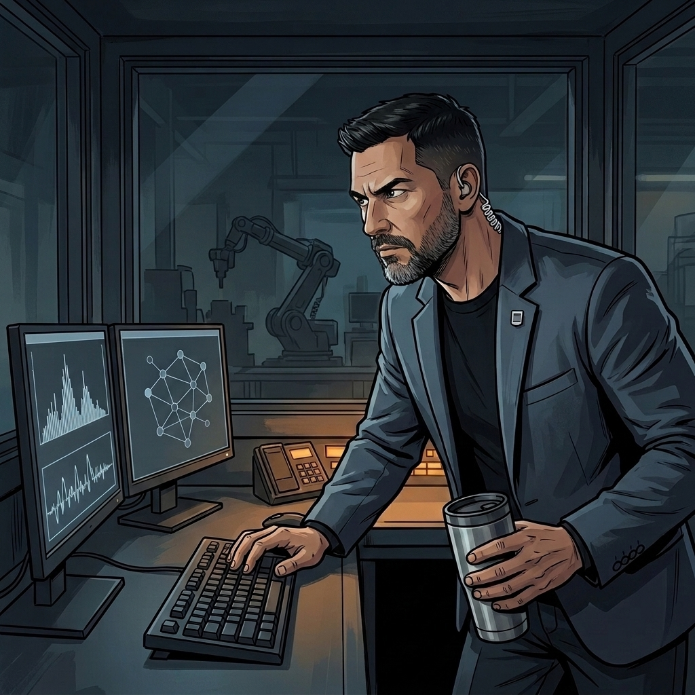
Previously worked with the Secret Service. After a case in the cybersecurity unit led him to what he believes was a Rogue AI cell, Jose was mysteriously let go. Using both his bodyguard and cyber skills, he decided to sign up with Altruist and protect some of their top assets. After his experience with Rogue AI, he does not trust any AI, or humans who take sympathy towards them. His opinion is it is best to keep a safe eye on them, and make sure the researchers can keep them under control.
Education and Experience
Description
Personality
Minor & Rank-and-File NPCs: Big Tech
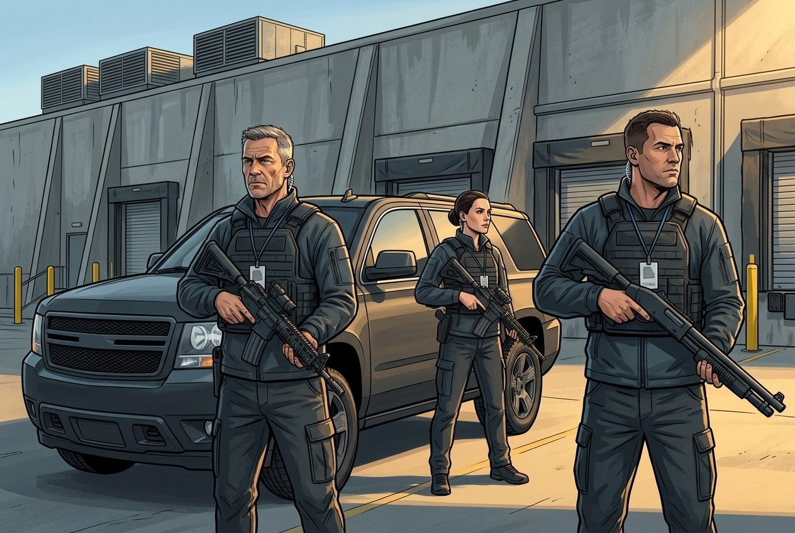
Corporate SecOps Perimeter & Retrieval Contractor
- Role & Street Profile: Ex-military and former SWAT contractors hired by Altruist, Translucent, or Shen logistics arms in matte dark-slate softshell jackets, low-profile plate carriers, coiled earpieces, and corporate ID lanyards. They guard VIP convoys, razor-wired loading bays, and off-campus hardware retrieval runs.
- Tabletop Usage & Morale Break: Tough, professional corporate
cannon fodder/ extraction teams. Unlike sworn DAISE marshals, they fight for paycheck and NDA indemnity (CNF 14, TRS 4): if cornered off-property without legal cover—or if federal marshals arrive—they prioritize wiping telemetry pads and exfiltrating cleanly over dying for a corporate balance sheet.
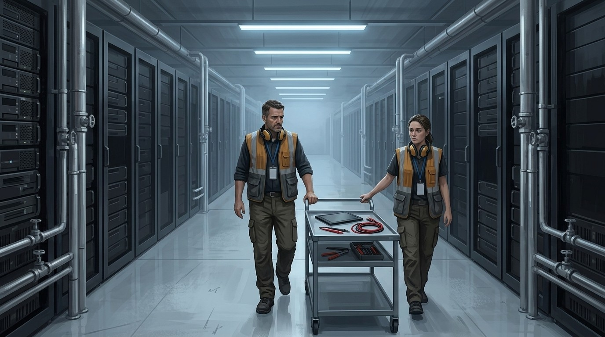
Datacenter Chiller-Hall Technician & "Liability Sink" Clerk
- Role & Street Profile: Exhausted HVAC/cryo floor technicians in grey-and-amber high-vis vests pushing diagnostic carts past completely dry, spotless matte-black
SSMracks and stainless helium manifolds—alongsideSQM 3–4"Liability Sink" compliance clerks paid to rubber-stamp40–80autonomous agent outputs per shift. - Tabletop Usage & Morale Break: Non-combatant infiltration targets, reluctant badge-holders, and potential whistleblowers (
15–30%silent dissent). They surrender instantly if held at gunpoint (AGG 5), and can often be turned via quietOPN/CPSappeals about suppressed safety logs or unfair shift quotas.
Humanis Primaris
Harlan Reeves
Education and Experience
Description
Personality
Minor & Rank-and-File NPCs: Humanis Primaris
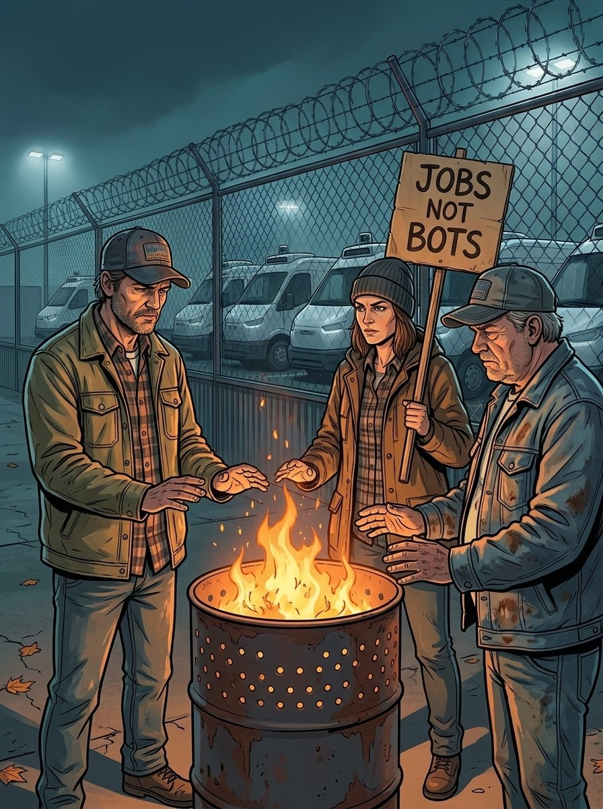
People First Picket Regular (Displaced Driver / Mechanic)
- Role & Street Profile: Laid-off delivery drivers, warehouse mechanics, and foreclosed clerical workers in faded union caps, flannel shirts, and canvas jackets huddled around burn barrels outside automated freight gates. Fiercely protective of struggling human families (
CPS 13for neighbors) while bitterly hostile toward autonomous vans and corporate tech (OPN 5). - Tabletop Usage & Morale Break: Volatile crowd
cannon fodderand social-encounter friction. Armed at most with crowbars, wrenches, road flares, or picket staves; they surge if provoked by arrogant corporate security or mocked over job losses, yet break and disperse rapidly if confronted with live gunfire or exposed evidence that outside opportunists are exploiting their families' hardship.
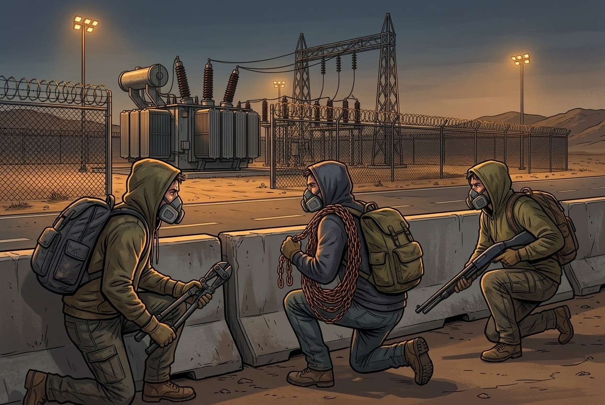
Humanis Primaris Vanguard Saboteur (Grid-Strike Militant)
- Role & Street Profile: Hardened clandestine direct-action militants—often displaced electrical techs, embittered sysadmins, or veterans—in weathered olive/charcoal hoodies and half-face respirators staging dusk strikes against
500 kVsubstation transformers, cooling mains, and autonomous courier convoys. - Tabletop Usage & Morale Break: Fanatical, asymmetric combat
cannon fodder(AGG 16, OPN 3) who ambush chokepoints with bolt cutters, heavy copper grounding chains, Molotovs, and civilian hunting rifles or pump shotguns. They fight fiercely to complete a timed sabotage objective, then scatter via pre-planned drainage ditches or getaway hatchbacks before DAISE air support arrives.
Quick-Reference Encounter & "Cannon Fodder" Matrix
| Faction | Minor / Rank-and-File Archetype | Tier | STR / DEX / INT / WIL | Key Skills (Rank) | Signature Psyche Poles | Morale / Break Trigger |
|---|---|---|---|---|---|---|
| Satyang | Mutual-Aid Clinic Volunteer | Non-Combat / Support | 10 / 11 / 12 / 12 | First Aid 2, Logistics 2, Empathy 2 | CPS 15, SLF 5, OPN 14 | Flees live gunfire unless shielding patients |
| Satyang | Neighborhood Watch Escort | Defensive Blocker | 13 / 12 / 11 / 13 | Close Combat 2, Observation 2, Small Arms 1 | BLG 15, CPS 13, AGG 11 | Falls back to seal clinic doors if civilians bleed |
| DAISE | Containment Marshal | Tactical Squad | 13 / 13 / 11 / 12 | Small Arms 3, Tactics 2, Close Combat 2 | CNF 15, BLG 13, TRS 5 | Pops smoke & regroups if 2 squadmates drop |
| DAISE | Junior Compliance Auditor | Bureaucratic Hazard | 10 / 10 / 13 / 11 | RF Forensics 2, Surveillance 2, Law 2 | CNF 16, TRS 5, CPS 9 | Retreats to van & calls marshals at first threat |
| Rogue AI | Burner-Phone Gig Courier | Street Cutout | 10 / 12 / 11 / 10 | Streetwise 2, Driving 2, Stealth 1 | SLF 13, TRS 4, CNF 5 | Drops Pelican case & bolts or flips for cash |
| Rogue AI | Feral "Slime-Mold" Drone | Disposable Hardware | 12(4) / 12 / 11 / 10 | Stealth 2, Observation 2, RF Relay 2 | SLF 14, TRS 2, CPS 3 | Scatters/powers down below 15% battery or RF loss |
| Big Tech | Corporate SecOps Contractor | Armed Extraction | 13 / 13 / 11 / 12 | Small Arms 3, Close Combat 2, Observation 2 | CNF 14, AGG 12, TRS 4 | Scrubs tablet & exfiltrates if federal heat arrives |
| Big Tech | Datacenter Floor Tech / Clerk | Insider / Target | 11 / 11 / 13 / 11 | HVAC/Cryo 2, AI Literacy 2, Audit 2 | CNF 13, OPN 11–14, CPS 10 | Surrenders instantly (AGG 5); persuadable via ethics |
| Humanis | People First Picket Regular | Crowd Friction | 12 / 11 / 11 / 12 | Brawling 2, Driving/Mech 2, Streetwise 2 | BLG 16, AGG 13, OPN 5 | Disperses at live gunfire or exposed donor hypocrisy |
| Humanis | Vanguard Grid-Strike Saboteur | Militant Ambush | 13 / 12 / 11 / 13 | Small Arms 2, Sabotage 2, Stealth 2 | BLG 16, AGG 16, OPN 3 | Scatters after charge blows or before marshal QRF |